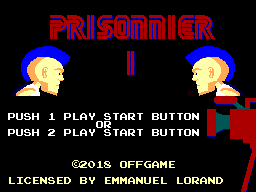
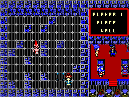
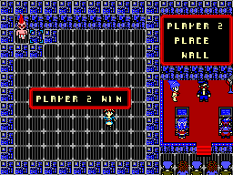

Prisonnier II, est un Hombrew gratuit pour la Sega Master System.
Jouable à deux joueurs, le but du jeu est de bloquer son adversaire pour remporter la partie.
A tour de rôle, chaque joueur doit se déplacer d'une case et poser un obstacle sur le plateau.
|  |  |  |
Version 1.0.0 : du 17/03/2018:
Télécharger compression.rar
Télécharger compression.zip
Windows : Lien (Fonctionne bien sur Kega Fusion)
Linux: Lien
Mac OS : Lien
Android :Retrobox
Compatible sur Master System 1,2 et Megadrive (Mode Master System) avec un everdrive.
Programmeur : Loïc Lété.
Graphismes : Jean Monos, Aezur, Patrice Cervellin.
Musique et Effet Sonore : Jean Monos
Auteur : Emmanuel Lorand
Aide Divers : Upsilande, Laetitia Broqua, Martin Labarussias, Marie
devkitSMS : sverx
Site réalisé par Loïc Lété, Prisonnier II un jeu Offgame Mise à jour du site : 17/03/2018